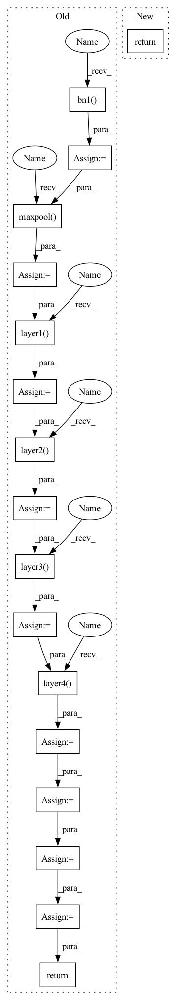

Pattern ID :14627
Before Change
def execute(self, x):
x = self.conv1(x)
x = self.bn1( x)
x = self.relu(x)
x = self.maxpool( x)
x = self .layer1( x)
x = self .layer2( x)
x = self .layer3( x)
x = self .layer4( x)
x = self.avgpool(x)
x = jt.reshape(x, [x.shape[0],-1])
x = self.fc(x)
return x
def Resnet18():
model = ResNet(BasicBlock, [2,2,2,2])After Change
return x
def execute(self, x):
return self._forward_impl(x)
def _resnet(block, layers, **kwargs):
model = ResNet(block, layers, **kwargs)In pattern: SUPERPATTERN
Frequency: 3
Non-data size: 17
Instances Fragment ID: 47982813
Project Name: jittor/jittor
Commit Name: 6e08781df42059bfe5731715d6acf32d33661347
Time: 2020-04-19
Author: 576825820@qq.com
File Name: python/jittor/models/resnet.py
M Class Name: ResNet
N Class Name: ResNet
M Method Name: execute(2)
N Method Name: execute(2)
M Parent Class: nn.Module
N Parent Class: Module
M File Name: python/jittor/models/resnet.py
N File Name: python/jittor/models/resnet.py
M Start Line: 204
M End Line: 217
N Start Line: 145
N End Line: 145
Before Change
def execute(self, x):
x = self.conv1(x)
x = self.bn1( x)
x = self.relu(x)
x = self.maxpool( x)
x = self.layer1( x)
x = self.layer2( x)
x = self.layer3( x)
x = self.layer4( x)
x = self.avgpool(x)
x = jt.reshape(x, [x.shape[0],-1])
x = self.fc(x)
return x
def Resnet18():
model = ResNet(BasicBlock, [2,2,2,2])After Change
return x
def execute(self, x):
return self._forward_impl(x)
def _resnet(block, layers, **kwargs):
model = ResNet(block, layers, **kwargs) Fragment ID: 47982814
Project Name: jittor/jittor
Commit Name: 6e08781df42059bfe5731715d6acf32d33661347
Time: 2020-04-19
Author: 576825820@qq.com
File Name: python/jittor/models/resnet.py
M Class Name: ResNet
N Class Name: ResNet
M Method Name: execute(2)
N Method Name: execute(2)
M Parent Class: nn.Module
N Parent Class: Module
M File Name: python/jittor/models/resnet.py
N File Name: python/jittor/models/resnet.py
M Start Line: 204
M End Line: 217
N Start Line: 145
N End Line: 145
Before Change
return nn.Sequential(*layers)
def forward(self, x):
out = F.relu(self.bn1( self.conv1(x)) )
out = self.maxpool( out)
out = self.layer1( out)
out = self.layer2( out)
out = self.layer3( out)
out = self.layer4( out)
out = self.avgpool(out)
out = out.view(out.size(0), -1)
out = self.fc(out)
return out
def resnet(cfg, sketch_rate=None, start_conv=1, num_classes=1000):
if cfg == "resnet18":After Change
return x
def forward(self, x):
return self._forward_impl(x)
def resnet(cfg, layer_cfg=None, num_classes=1000):
if cfg == "resnet18": Fragment ID: 47982809
Project Name: lmbxmu/epruner
Commit Name: 6250a88e8504c685486d149f1c99ec05235666e1
Time: 2020-02-12
Author: 864589477@qq.com
File Name: model/resnet_imagenet.py
M Class Name: ResNet
N Class Name: ResNet
M Method Name: forward(2)
N Method Name: forward(2)
M Parent Class: nn.Module
N Parent Class: nn.Module
M File Name: model/resnet_imagenet.py
N File Name: model/resnet_imagenet.py
M Start Line: 94
M End Line: 103
N Start Line: 211
N End Line: 211
Before Change
def forward(self, x):
self.conv1.weight.data = torch.mul(self.conv1.weight, self.mask1.weight)
out = F.relu(self.bn1( self.conv1(x)) )
if self.num_classes == 1000:
out = self.maxpool( out)
out = self.layer1( out)
out = self.layer2( out)
out = self.layer3( out)
if self.num_classes == 1000:
out = self.layer4( out)
out = F.avg_pool2d(out, out.size(3))
out = out.view(out.size(0), -1)
out = self.linear(out)
return out
def __prune__(self, threshold):
self.mask1.weight.data = torch.gt(torch.abs(self.conv1.weight), threshold).float()After Change
return x
def forward(self, x):
return self._forward_impl(x)
class ResNet_CIFAR(nn.Module): Fragment ID: 47982811
Project Name: incheon-cho/dynamic_model_pruning_with_feedback
Commit Name: 12bd228dc14e0c422c262bcbc1b81cb435e05a4d
Time: 2020-09-06
Author: dlscjs5362@gmail.com
File Name: models/resnet.py
M Class Name: ResNet
N Class Name: ResNet
M Method Name: forward(2)
N Method Name: forward(2)
M Parent Class: nn.Module
N Parent Class: nn.Module
M File Name: models/resnet.py
N File Name: models/resnet.py
M Start Line: 146
M End Line: 159
N Start Line: 200
N End Line: 200